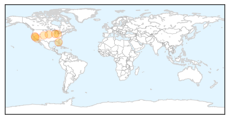
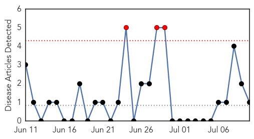

West Nile Virus
30-Day Web Trend
7 alerts, 0 warnings

30-Day Twitter Trend
5 alerts, 0 warnings

Article Locations
Article Confidences

Top Articles:
- 0.993
- West Nile virus activity on the rise
- 0.971
- Mosquitoes with West Nile found across Ohio
- 0.955
- West Nile Virus Detected in Pinellas
- 0.935
- West Nile Virus Detected In Will County « CBS Chicago
- 0.931
- Health department warns of increased West Nile virus activity
- 0.927
- West Nile confirmed in Butler County
- 0.921
- West Nile virus is confirmed in Oklahoma County resident
- 0.795
- Colorado Communities Take Action To Prevent Spread Of West Nile Virus « CBS Denver
- 0.566
- REGION: Horse deaths spur concern
Top Tweets:
- 0.548
- Flavivirus news: Mosquito trap tests positive for West Nile virus in west suburban Elburn - WLS... http://t.co/kmE5ZVnKpy pathogenposse
Pertussis
30-Day Web Trend
3 alerts, 0 warnings

30-Day Twitter Trend
0 alerts, 0 warnings

Article Locations
Article Confidences

Top Articles:
Top Tweets:
-
No tweets found for Jul 10, 2015